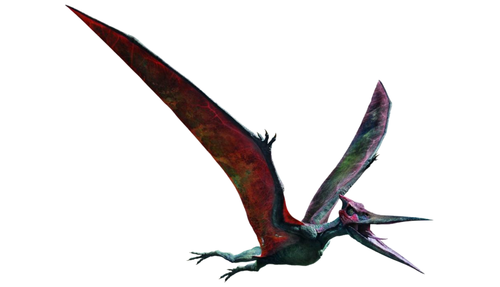

What are about Ptheranodon
Pteranodon longiceps was one of the largest winged reptiles and weren’t actually dinosaurs at all. They lived during the Late Cretaceous alongside well-known dinosaurs, including the Tyrannosaurus rex. While they weren’t birds either, they exhibited many of the same behaviors as well as some unique traits of their own.
Pteranodon were some of the biggest Pterosaurs with a wingspan of up to 23 feet. Adult male wingspans averaged around 18 feet and females were 12 feet. Because there are over 1,000 specimens discovered, scientists know a lot about the various stages of Pteranodon growth.
While the places that Pteranodon has been found include prairies and grasslands, they were once much lusher with rivers and oceans nearby. Pteranodon likely ate fish
The Pteranodon lived during the Cretaceous period, between 100 and 90 million years ago. Most of the discovered specimens were located in the western and midwestern United States. The first discovery was made in 1871
Facts about Pteranodon
The name Pteranodon means: “Toothless Wing”.
The Pteranodon is not a dinosaur, it’s a pterosaur, which is a group containing the largest known flying reptiles.
The Pteranodon lived between 88 and 84.5 million years ago.
Pteranodons had no teeth, but rather a sharp beak like some modern day birds.
The average wingspan of a male Pteranodon is 18 feet.
The average wingspan of a female Pteranodon is 12 feet.
Male Pteranodons were considerably larger than female Pteranodons.
Pteranodons were able to fly and some paleontologists think they would have flown like the modern-day albatross.